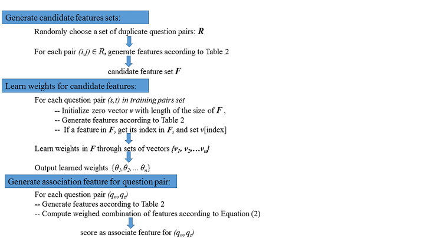

Introduction
Programming community based question-answering (PCQA) websites such as Stack Overflow enable programmers to find working solutions to their queries. Despite detailed posting guidelines, duplicate questions that have been answered are frequently created. To tackle this, Stack Overflow provides a mechanism for reputable users to manually mark duplicate questions. This is a laborious effort, and leads to many duplicate questions undetected. Existing duplicate detection methodology from traditional community based question-answering (CQA) websites are difficult to be adopted directly to PCQA, as PCQA posts often contain source code which are linguistically very different from natural languages. In this paper, we propose a methodology designed for the PCQA domain to detect duplicate questions. To extract relevant features, our methodology leverages continuous word vectors from the deep learning literature, topic model features and phrases pairs that co-occur frequently in duplicate questions mined using machine translation systems. These features capture semantic similarities between questions and produce a strong performance for duplicate detection. Experiments on a range of real world datasets demonstrate that our method works very well; in several datasets our system outperforms the state-of-the-art benchmark by over 30%.
This work has been accepted as a full paper by WWW 2017. This page introduces how we mine association rules and compute association score as a feature (among the three types of features proposed in this work).
Methodology
The figure below shows our method to mine association pairs and compute association score.
We first extract phrases that co-occur frequently in a duplicate pair in a PCQA corpus. These questions are manually marked as duplicates by reputable users on Stack Overflow. Note that dataset used for mining association pairs is different to the dataset used for training the association score perceptron and PCQADup. For a pair of target question t and master questionm, we learn alignment of words between t and m via machine translation. The word alignment is performed in each direction of (m, t) and (t, m) and then combined using the grow-diag-final-and heuristic. Given the word alignments, we then extract associated phrase pairs based on 3-gram heuristics. We prune pairs that occur less than 10 times in the data, and this produces over 130K association pairs. We henceforth refer to this set of association pairs as Α. More details please refer to our paper. 
Implementation
I use the GiZA++ (in Moses) to get word alignment based phrases pairs. Then I select the pairs that occur more than 10 times and finally obtain a set, which I call association pairs. Then I generate lexical features and get a long feature lists by adopting semantic parsing approach from [Berant13]. I use these features in an online learning algorithm (Perceptron implemented in skilearn) for classification and learn weights for the features. Then I generate lexical features for new question pairs and use the sum of weight*feature_value as the association feature (Codes here).
References